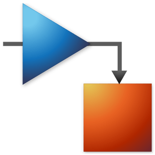
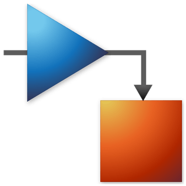
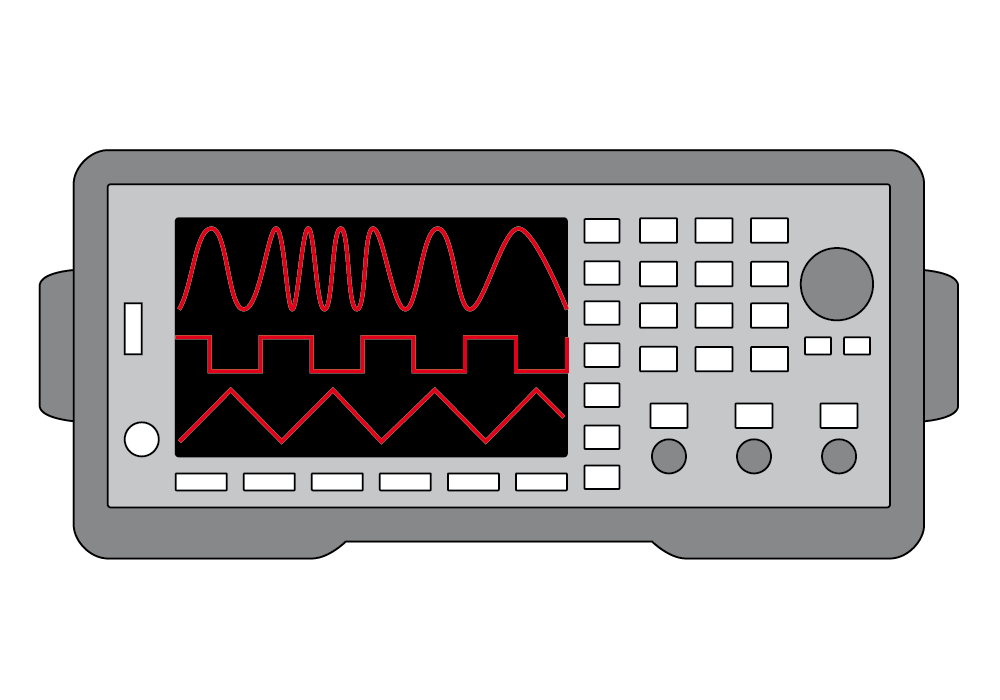
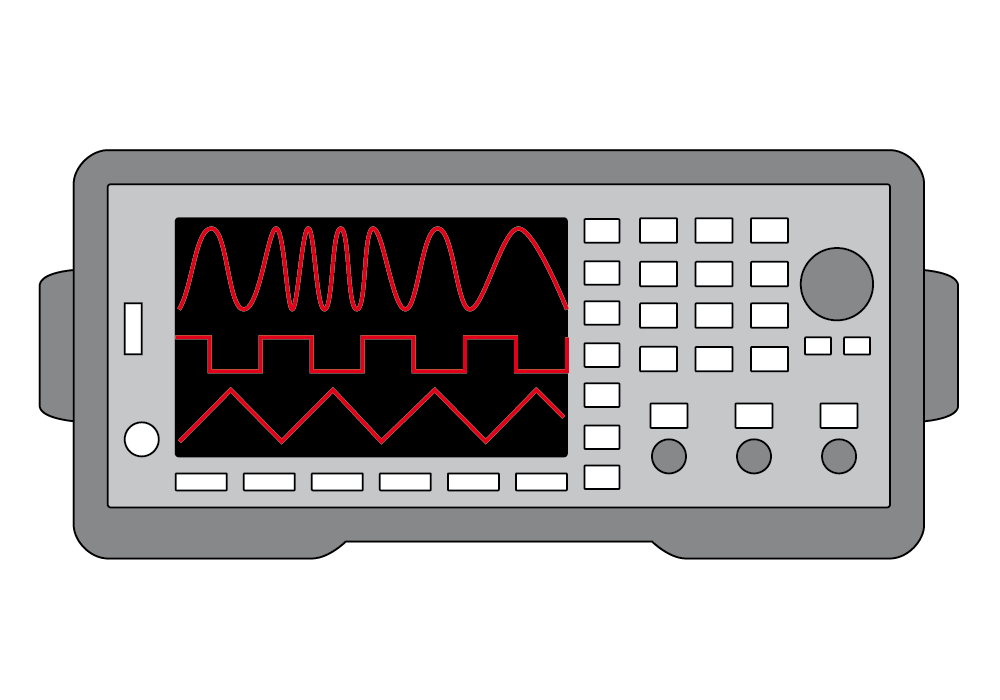

M.Sc. in Mobile Robotics, University of Bonn
Oct 2025 – Present
Specializing in autonomous navigation & AI-driven robotics:
- Simultaneous Localization and Mapping (SLAM)
- Trajectory Estimation
- Machine Learning
- Computer Vision
M.Sc. Mobile Robotics @ University of Bonn
I am a master's student in Mobile Robotics at the University of Bonn.
Previously, I completed my Bachelor of Applied Science (Honours) in
Mechatronic Systems Engineering
at Simon Fraser University (SFU), Canada.
My honours thesis was in collaboration with Defence Research and Development Canada (DRDC) – Suffield Research Centre (SRC), a government research organization
specializing in defence research and innovation. The focus of my work was establishing the foundations of a sim-to-real pipeline with NVIDIA Issac Sim for AI-robotics research.
Through my academic and research experience, I have developed a diverse skillset as a mechatronics student, making me both adaptable and an independent fast-learner
in a time where technology evolves rapidly across academia and industry.
For further details, please refer to my CV (updated August 2025).
NVIDIA Isaac Sim, ROS 2, PX4-Autopilot, MAVLink, QGroundControl


Python, MATLAB, C/C++

 

SOLIDWORKS, Blender, Simulink/SimScape, Proteus


Jetson Nano, Arduino, Raspberry Pi, STM32

 


Altium Designer, MPLAB Mindi, Soldering, Oscilloscope, Function Generator, DMM


Linux, Docker, Git/GitHub/GitLab, Jupyter Notebook, LaTeX, HTML/CSS
Specializing in autonomous navigation & AI-driven robotics:
Thesis: Photorealistic Multi-Robot Simulation and GPS-Based UGV Localization using Synthetic Aerial Imagery
Activities: